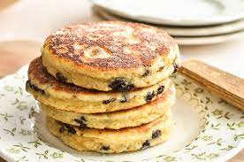

Welshcake Recipe

Description
Welsh Cakes ~ they're cooked on a griddle like a pancake,
but can be eaten out of hand like a scone, these sweet,
buttery little cakes are a Welsh tradition that deserve a spot on your
brunch or tea table!
A Welsh delicacy that can be served plain, with jam or butter
Ingredients
- 3 cups all purpose flour
- 1 cup granulated sugar
- 2 tsp baking powder
- 3/4 tsp salt
- 1/2 tsp ground nutmeg
- 1 cup (2 sticks) unsalted butter, cold and cut into small pieces
- 3/4 cup currants
- 2 eggs plus enough milk to make 3/4 cup liquid.
- extra sugar plus a little nutmeg or cinnamon for dusting (optional)
Steps
- Whisk the flour, sugar, baking powder, salt, and nutmeg in a mixing bowl.
- With your hands, mix the cold butter into the flour mixture until the butter is well
dispersed and the whole mixture is crumbly.
It's ok to have some small chunks of butter.
- Add the currants and mix to combine.
- Briefly whisk the eggs with the milk, and add the liquid to the
flour and butter mixture. Mix until everything is just combined.
The dough will be very sticky.
- On a floured surface, pat the dough into a disk and gently roll out until it's about 1/4 to 1/3 of an inch thick. You can divide the dough in half and keep half of it in the fridge until you're ready for it if your rolling surface
and frying pan/griddle are on the smaller side.
- Cut out the cakes with a 3 or 3 1/2 inch biscuit cutter, and lay them on a baking sheet or a piece of
parchment paper until you're ready to cook them.
- Preheat a heavy pan or griddle (cast iron works great here because of its even heating) to medium/medium-low heat, and dry fry (no oil) the cakes. They'll need about 2 or 2 and a half minutes or so on each side. You'll want to make sure your pan is the right temperature so they don't burn on the outside before they get cooked through in the middle, so you might need to do a test-cake or two.
Cook them until they're lightly golden and spring back when gently touched.
- Mix a tablespoon or two of extra sugar with a pinch of nutmeg and/or cinnamon, and dust the finished cakes, if desired.
Serve warm with butter, jam, clotted cream, or eat them as is!